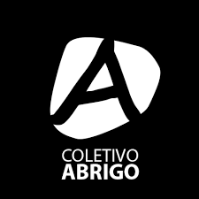

Após a tragédia que começou em 29 de abril de 2024 no Rio Grande do Sul, Julia Badin decidiu agir para ajudar as famílias afetadas. Junto de outros estudantes da University of South Florida, ela lançou uma iniciativa para apoiar essas pessoas. Desde 14 de maio, trabalhamos no desenvolvimento de um aplicativo para tornar essa ajuda uma realidade o mais rápido possível. Com muito esforço e dedicação, alcançamos nossa meta!
Nosso projeto foi criado para auxiliar diretamente as pessoas do Rio Grande do Sul. Através do nosso aplicativo, você pode doar ou receber doações de forma transparente e eficaz. Os usuários que precisam de ajuda podem postar fotos e compartilhar suas histórias, enquanto aqueles que desejam doar podem escolher qual das famílias eles querem doar. O aplicativo facilita a conexão entre doadores e beneficiários, mas não realiza transferências financeiras diretamente.
É importante observar que, para ser um beneficiário, é preciso entrar em contato com uma das ONGs parceiras para realizar o cadastro (verifique a lista abaixo). Para agilizar o cadastro, inclua na sua mensagem o seu email. Esse processo visa garantir maior segurança para todos os usuários.
Para as ONGS que têm interesse em ajudar e apoiar nossa causa, entre em contato pelo nosso email ou Instagram com suas informações de contato e logo. Agradecemos a sua ajuda!

Coletivo Abrigo
Porto Alegre
+55 51 98222-9080
contato@coletivoabrigo.org.br
Link para contato
Julia Badin
Meu nome é Julia, tenho 20 anos e curso ciência da computação na University of South Florida. Tive a ideia de criar esse projeto após voltar para o Rio Grande do Sul durante as férias da faculdade e ver a destruição que atingiu nosso estado. Espero que através dele eu consiga retribuir toda a ajuda que o povo gaúcho já me ofereceu.
Gustavo Galvão
Oi! Meu nome é Gustavo Galvão e Silva, sou natural de Goiânia e estudo ciência da computação na University of South Florida. Como integrante do Adote uma Família, espero poder contribuir com o desenvolvimento do projeto para que possamos ajudar aqueles que foram impactados pelos desastres ocorridos no Rio Grande do Sul.
Sofia Camargo
Meu nome é Sofia, tenho 18 anos e estou no segundo ano me formando em engenharia mecânica na University of South Florida. Sou de SP, porém as notícias do que está acontecendo no Rio Grande do Sul me impactaram muito. Então espero muito que esse projeto consiga alcançar e ajudar as pessoas que estão sofrendo consequências.
Cássio Everling
Meu nome é Cássio, tenho 18 anos e sou estudante de Ciência da Computação na University of South Florida. Nasci e cresci em Santa Catarina, mas minha família é gaúcha. Vejo neste projeto uma oportunidade de causar um impacto positivo na vida das pessoas que perderam tanto e sofreram com as inundações no Rio Grande Do Sul.
Lucas Bianco
Meu nome é Lucas, tenho 19 anos e estou estudando ciência da computação na University of South Florida. Quero ajudar o máximo possível para que esta ideia saia do papel e ajude financeiramente os gaúchos que sofreram tanto com essa tragédia. Além disso, estou indo para meu segundo ano de faculdade e espero poder aplicar os conceitos que tenho aprendido e aprimorar meu conhecimento.
Gabriela Fluzer
Meu nome é Gabriela, tenho 20 anos e estou no meu último ano de faculdade cursando Marketing Digital na University of South Florida. Sou de Porto Alegre RS e, com toda a tragédia acontecendo aqui agora, resolvi dedicar parte do meu tempo de férias para me envolver neste projeto. Espero poder contribuir com as minhas experiências e poder ajudar o máximo possível de famílias prejudicadas pela enchente.
Lucas Pereira
Meu nome é Lucas, tenho 18 anos e estou no segundo ano de faculdade estudando ciência da computação na University of South Florida. Originalmente sou de SP, mas como todos os outros me solidarizo com a causa. Eu entrei no projeto visando ajudar o grupo com esta ideia que pode causar grande impacto nessas pessoas que estão passando por tanta dificuldade, e eu espero que nosso grupo consiga ajudar o máximo de famílias possíveis.
Maria Julia
Meu nome é Maria Julia, tenho 18 anos e acabei de me formar no ensino médio, em agosto começo a cursar Psicologia na University of South Florida. Sou de Natal/RN, mas moro nos Estados Unidos faz 3 anos. Decidi entrar no Adote uma Família porque prestar apoio a quem precisa é fundamental pra superar esse momento difícil na história do nosso país. Espero que esse projeto possa fazer a diferença na vida das pessoas afetadas pela enchente.